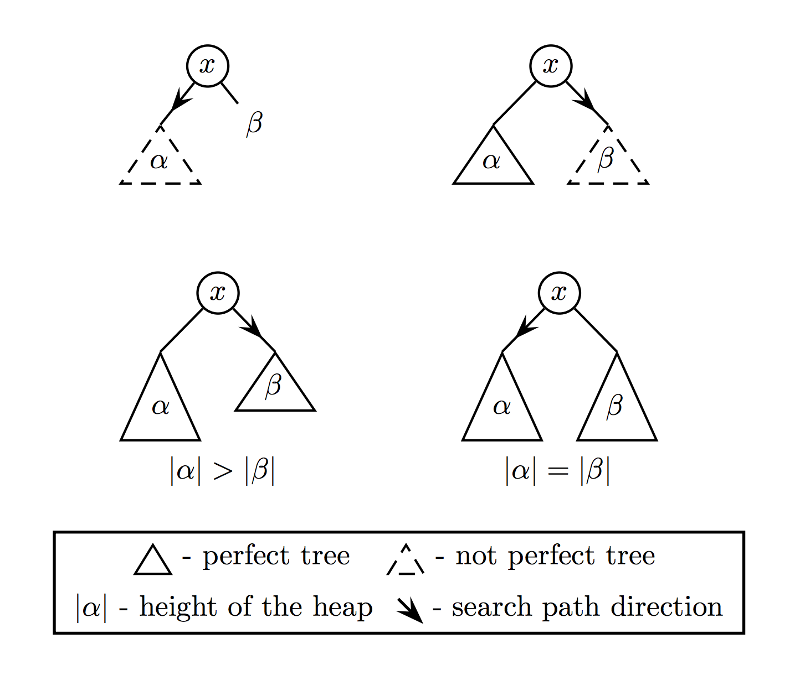

純粋なバイナリヒープ
純粋なヒープを実装する場合，Braun Treeなど色々と適したデータ構造があるらしいですね． でも、あまり詳しくないので今回は馴染みの深いバイナリヒープを実装する方法について調べてみました．
バイナリヒープとは？
二分木を用いて実装したヒープです．ヒープとは以下の性質をもつデータ構造です．
- 木構造をもつ
- 常に子要素の値は親要素の値以上
ヒープ自身の詳細についてはこの記事を参考にしてください．
バイナリヒープを純粋に実装する
一般的にバイナリヒープの実装には配列とそのインデックスを用いることが多いと思います．（上記のウィキペディアにもこの方法が記載されています） しかしがなら，この方法は配列の内容を書き換える必要があるため，純粋ではありません．そこで，今回は以下で提案されている手法を用いました．
A Functional Approach to Standard Binary Heaps
この論文では，純粋なバイナリヒープの挿入，構築，削除の各操作ついてScalaを用いて説明しています． 以降，これらについて簡単に紹介を行います．
ヒープクラス
この論文ではバイナリヒープを表現するためのクラスHeapを以下のように定義しています，
abstract sealed class Heap {
def min: Int // ヒープの最小値
def left: Heap //左側の子要素
def right: Heap //右側の子要素
def size: Int //ヒープに含まれる要素数
def height: Int //ヒープの高さ
}
case class Branch(min: Int, left: Heap, right: Heap, size: Int, height: Int) extends Heap
case object Leaf extends Heap {
def min: Int = fail("Leaf.min")
def left: Heap = fail("Leaf.min")
def right: Heap = fail("Leaf.right")
def size: Int = 0
def height: Int = 0
}上述の通り，Heapクラスのleftとrightを持つ再帰的な構造になっています． また，Heapクラスは抽象クラスであるため，一つ以上の子要素を持つBranchと子要素を持たないLeafとを派生させています． 単純な二分木にはsizeとheightは必須ではありません．しかしながら，今回のようにバイナリヒープを実現するためには非常に重要となってきます．
挿入 O(log n)
新たな要素をを挿入する際に気をつけなければいけないことは，要素を挿入したバイナリヒープもまた上述の条件を満たさなければならないということです． そこで，今回の実装では挿入処理を以下の二つの処理に分けて考えます．
- 要素をLeafとして最下レベルに追加する．
- 1.にて追加した要素を適切な位置まで上へ登らせる（bubbleUp）．
それでは，まずは1.の新たな要素をLeafとして追加する方法について解説します． ノード追加すること自体は言語側でやってくれることなので，基本的には問題になりません． そのため，次にLeafを挿入する場所はどこかを知ることが問題となります．
二分木に対する操作のパフォーマンスは木の高さに依存するため，可能な限り二分木の高さを抑える必要があります． 従って，新たな要素はleft側から順番に挿入します． バイナリヒープは二分木であるため，ルートから適切にleftまたはrightを選択することで任意の位置に到達することが可能です． そのため，この問題はleftとrightを以下のように4つの場合に分けて考えることで解決することができます．
- leftが完全二分木でない場合 -> leftを選択
- leftが完全二分木であるが，rightは完全二分木でない場合 -> rightを選択
- leftもrightも完全二分木であるが，leftの方がrightよりも高い場合 -> rightを選択
- leftもrightも完全二分木であり，高さが等しい場合 -> leftを選択
これら4つの場合を図に表すと以下のようになります．

また，Heapが完全二分木であるか否かは以下の条件式で求めることが可能です．
\[ Size == 2^{Height} - 1 \]
次に，2.のbubbleUpの方法について解説します． bubbleUpの処理は単純で，自身の値(min)と子要素の値(min)とを比較し，子要素の値(min)の値の方が小さい場合は要素を入れ替えます． 以上の結果を元に，insertとbubbleUpは以下のように実装することができます．
def bubbleUp(x: Int, l: Heap, r: Heap): Heap = (l, r) match {
case (Branch(y, lt, rt, _, _), _) if (x > y) =>
Heap(y, Heap(x, lt, rt), r)
case (_, Branch(z, lt, rt, _, _)) if (x > z) =>
Heap(z, l, Heap(x, lt, rt))
case (_, _) => Heap(x, l, r)
}
def insert(x: Int): Heap =
if (isEmpty) Heap(x)
else if (left.size < math.pow(2, left.height) - 1)
bubbleUp(min, left.insert(x), right)
else if (right.size < math.pow(2, right.height) - 1)
bubbleUp(min, left, right.insert(x))
else if (right.height < left.height)
bubbleUp(min, left, right.insert(x))
else bubbleUp(min, left.insert(x), right)構築 O(n)
ソートされていない配列からバイナリヒープの構築を試みます． ここでは，構築済みのバイナリヒープをleftとrightに，配列のi番目の要素をminに設定した要素を考えます． しかしながら，配列のi番目の要素が各子要素の値(min)より小さいとは限らないため，全体としてヒープの条件を満たすとは限りません． そこで，ヒープの条件を満たさない場合は，配列のi番目の要素を適切な位置まで降ろす操作(bubbleDown)が必要となります．
bubbleDownはHeapのminの値と各子要素のminの値とを比較し，小さな場合は何もせず， 大きな場合は要素を入れ替えた後に，再帰的にbubbleDownを呼びだします． こうすることで，当該要素を適切な位置まで降ろすことができます． 以上の結果を踏まえ，配列からバイナリヒープを構築する関数heapify及びbubbleUpは以下のように定義できます．
def bubbleDown(x: Int, l: Heap, r: Heap): Heap = (l, r) match {
case (Branch(y, _, _, _, _), Branch(z, lt, rt, _, _))
if (z < y && x > z) => Heap(z, l, bubbleDown(x, lt, rt))
case (Branch(y, lt, rt, _, _), _)
if (x > y) => Heap(y, bubbleDown(x, lt, rt), r)
case (_, _) => Heap(x, l, r)
}
def heapify(a: Array[Int]): Heap = {
def loop(i: Int): Heap =
if (i < a.length) bubbleDown(a(i), loop(2 * i + 1), loop(2 * i + 2))
else Leaf
loop(0)
}heapifyは一見するとを\(O(n\log n)\)に見えますが，漸近的には\(O(n)\)らしいです． 正直，なぜ\(O(n)\)に成るのかは理解できていませんが，アルゴリズムイントロダクションに詳細が記載されているとあったので，そのうち調べてみようと思います．
削除 O(log n)
要素をの削除も挿入と同様， 以下のように二つのの処理に分けて考えることができます．
- 最後に挿入した要素をバイナリヒープのルートへ移動させる
- 1.でルートへ移動した要素を適切な位置まで降ろす(bubbleDown)
最後に挿入した要素は挿入処理と同様に二分木を走査し，当該要素を見つけることで実現します． 要素を適切な位置まで降ろす処理(bubbleDown)は構築の際に用いたものと同一です． 以上の結果より，要素を削除する関数removeは以下のように実装されます． なお，floatLeftは左側の，floatRightは右側の子要素の値と親要素の値を交換する関数です.
def remove: Heap =
if (isEmpty) fail("Empty heap.")
else bubbleRootDown(mergeChildren(left, right))
def bubbleRootDown(h: Heap): Heap =
if (h.isEmpty) Leaf
else Heap.bubbleDown(h.min, h.left, h.right)
def mergeChildren(l: Heap, r: Heap): Heap =
if (l.isEmpty && r.isEmpty) Leaf
else if (l.size < math.pow(2, l.height) - 1)
floatLeft(l.min, mergeChildren(l.left, l.right), r)
else if (r.size < math.pow(2, r.height) - 1)
floatRight(r.min, l, mergeChildren(r.left, r.right))
else if (r.height < l.height)
floatLeft(l.min, mergeChildren(l.left, l.right), r)
else floatRight(r.min, l, mergeChildren(r.left, r.right))
def floatLeft(x: Int, l: Heap, r: Heap): Heap = l match {
case Branch(y, lt, rt, _, _) => Heap(y, Heap(x, lt, rt), r)
case _ => Heap(x, l, r)
}
def floatRight(x: Int, l: Heap, r: Heap): Heap = r match {
case Branch(y, lt, rt, _, _) => Heap(y, l, Heap(x, lt, rt))
case _ => Heap(x, l, r)
}F#によるプライオリティキュー
バイナリヒープを使ったプライオリティキューの実装です．
参考文献ではScalaによる実装でしたが，自分が普段使いする言語はF#なので，F#で実装してみました．